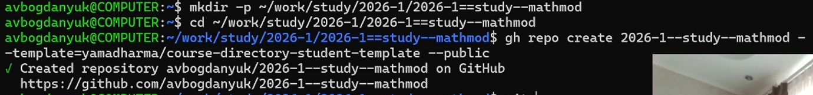
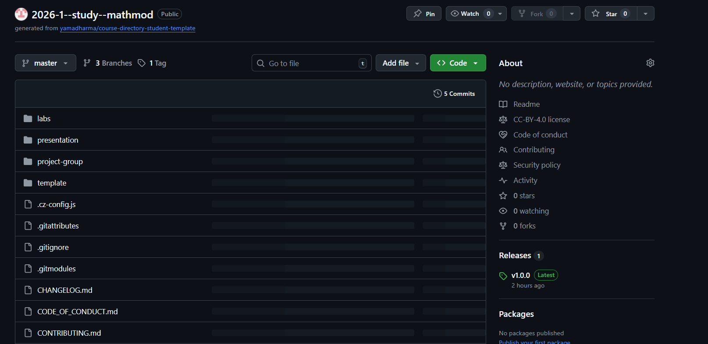
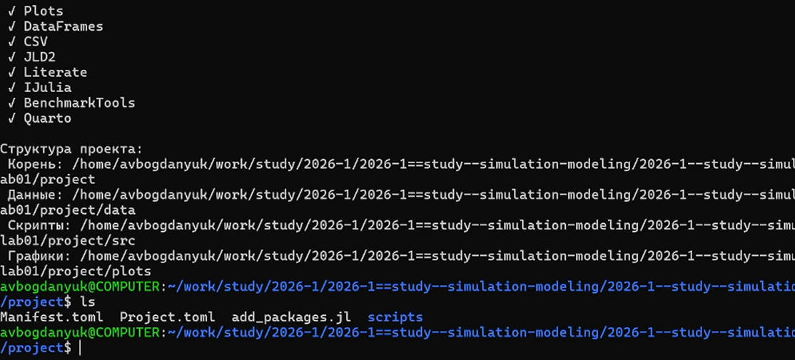
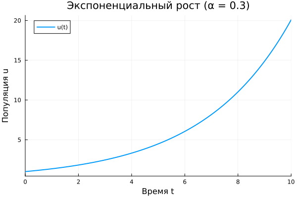
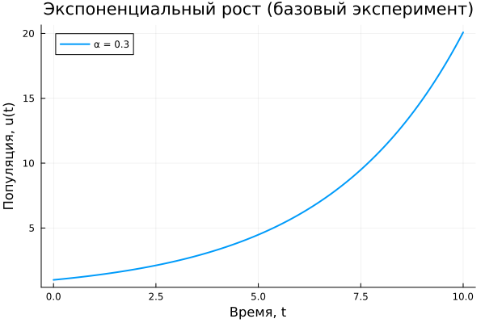
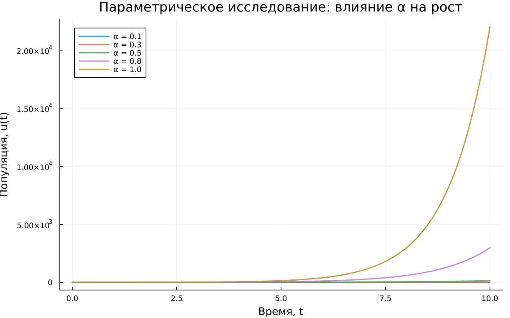
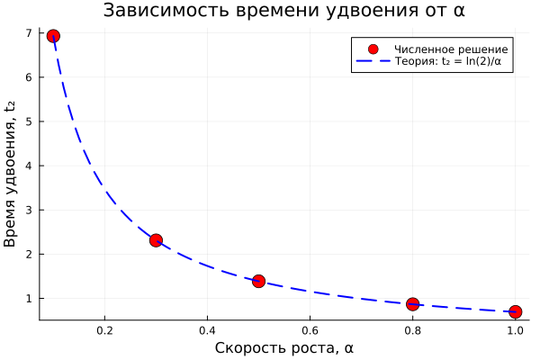
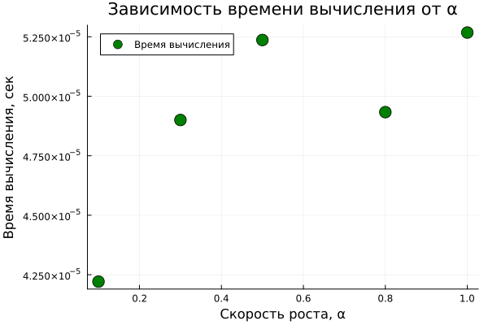

Лабораторная работа 1
Математическое моделирование
1 Цель работы
Целью данной лабораторной работы является создание рабочего пространства для выполнения лабораторных работ по курсу «Математическое моделирование», настройка инструментов программной инженерии (Git, Git-flow, семантическое версионирование, общепринятые коммиты), а также освоение методологии литературного программирования на примере языка Julia и пакета DrWatson.
2 Задание
- Создать рабочий каталог для всего курса.
- Создать рабочее пространство для программ в рамках лабораторной работы.
- Выполнить все задания по тексту лабораторной работы.
- Установить необходимые пакеты.
- Выполнить предложенный код.
- Преобразовать код в литературный стиль.
- Сгенерировать из литературного кода:
- чистый код;
- jupyter notebook;
- документацию в формате Quarto.
- Выполнить код из jupyter notebook.
- Интегрировать документацию в формате Quarto в отчёт.
- Добавить в код в литературном стиле вычисление для набора параметров.
- Сгенерировать из литературного кода с параметрами:
- чистый код;
- jupyter notebook;
- документацию в формате Quarto.
- Выполнить код из jupyter notebook с параметрами.
- Интегрировать документацию с параметрами в формате Quarto в отчёт.
3 Теоретическое введение
В ходе работы были изучены и применены следующие концепции и инструменты программной инженерии:
Семантическое версионирование (SemVer): Стандарт версионирования программного обеспечения, использующий формат МАЖОРНАЯ.МИНОРНАЯ.ПАТЧ. Увеличение номера версии сигнализирует о характере изменений в API [semver?].
Общепринятые коммиты (Conventional Commits): Спецификация для написания сообщений коммитов. Она определяет набор правил для создания понятной истории изменений, которая автоматически сопоставляется с SemVer [conventionalcommits?]. Пример структуры коммита: <тип>(<область>): <описание>. Основные типы: feat: (новая функциональность), fix: (исправление ошибки), BREAKING CHANGE: (несовместимые изменения).
Git и Git-flow: Распределенная система контроля версий Git и модель ветвления Git-flow, которая предполагает использование двух основных веток (master и develop), а также вспомогательных (feature, release, hotfix) для организации процесса разработки [gitflow?].
Верификация коммитов: Использование GPG-ключей для подписи коммитов, что позволяет подтвердить их подлинность на хостингах (GitHub/GitVerse).
Литературное программирование: Подход, предложенный Дональдом Кнутом, при котором программа пишется как литературное эссе, где код является лишь частью повествования. В Julia для этого используется пакет Literate.jl [knuth_literate_1984?].
DrWatson.jl: Фреймворк для управления научными проектами на Julia. Он обеспечивает стандартную структуру каталогов (?@tbl-drwatson-dir), упрощает сохранение и загрузку результатов, а также способствует воспроизводимости исследований [drwatson?].
4 Выполнение лабораторной работы
Для начала создаём рабочий каталог для курса, используя шаблон (рис. 1).

Готовый репозитория для курса на github.com (рис. 2).

Создаём рабочее пространство для программ в рамках лабораторной работы. Установить необходимые пакеты. На скриншоте показан результат работы программы на языке julia, чтобы проверить скаченные материалы(рис. 3).

Копируем код программы на языке julia из методички по лабораторной работе №1. Компилируем, получем результат в виде графика, который будет сохранён в папке plots (рис. 4).

Теперь создаём код для генерации нескольких видов графиков экспоненциального распределения scripts/02_exponential_growth.jl. Для начала базовый эксперемент (рис. 5).

Сравнительный анализ всех экспериментов (рис. 6).

График зависимости времени удвоения от a (рис. 7).

График зависимости времени вычисления от a (рис. 8).

5 Выводы
В ходе выполнения лабораторной работы было создано структурированное рабочее пространство для курса «Математическое моделирование». Освоены базовые инструменты и практики программной инженерии: система контроля версий Git с моделью ветвления Git-flow, семантическое версионирование и стандарт оформления коммитов Conventional Commits. Настроена безопасная работа с удаленными репозиториями с помощью SSH и PGP ключей для верификации коммитов.
Список литературы
- A Multi-Language Computing Environment for Literate Programming and Reproducible Research / E. Schulte [et al.] // Journal of Statistical Software. — 2012. — Vol. 46, no. 3. — ISSN 1548-7660. — DOI: 10.18637/jss.v046.i03.
- Knuth D. E. Literate Programming // The Computer Journal. — 1984. — Feb. — Vol. 27, no. 2. — P. 97–111. — ISSN 1460-2067. — DOI: 10.1093/comjnl/27.2.97.
- The Story in the Notebook / M. B. Kery [et al.] // Proceedings of the 2018 CHI Conference on Human Factors in Computing Systems. — ACM, 04/2018. — P. 1–11. — DOI: 10.1145/3173574.3173748.